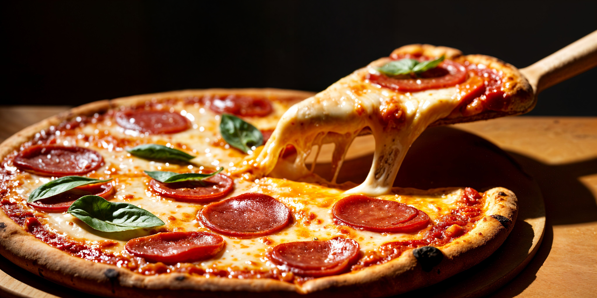

Calidad
Elegimos cada ingrediente con cuidado.
Todo empezó en una cocina, entre planos, códigos y hambre. Un grupo de amigos ingenieros descubrió que hacer una buena pizza es como resolver un problema: hay que elegir bien los materiales, medir con cuidado y probar hasta que salga perfecta. Así nacieron Los Ingenieros de la Pizza, en José C. Paz, con una idea simple: diseñar pizzas y construir sabores.
Elegimos cada ingrediente con cuidado.
Elegimos cada ingrediente con cuidado y cada pizza se hace con el mismo cuidado.
Amamos lo que hacemos y, por eso, siempre estamos intentando mejorar el sabor de las pizzas. Lo cual nos hace muy felices porque podemos ver la satisfacción de nuestros clientes.
Un espacio gastronómico único en José C. Paz pensado para compartir en familia y con amigos.

Antonio Rosalis Netto
Dahiana Aldaño
Máximo Galvan